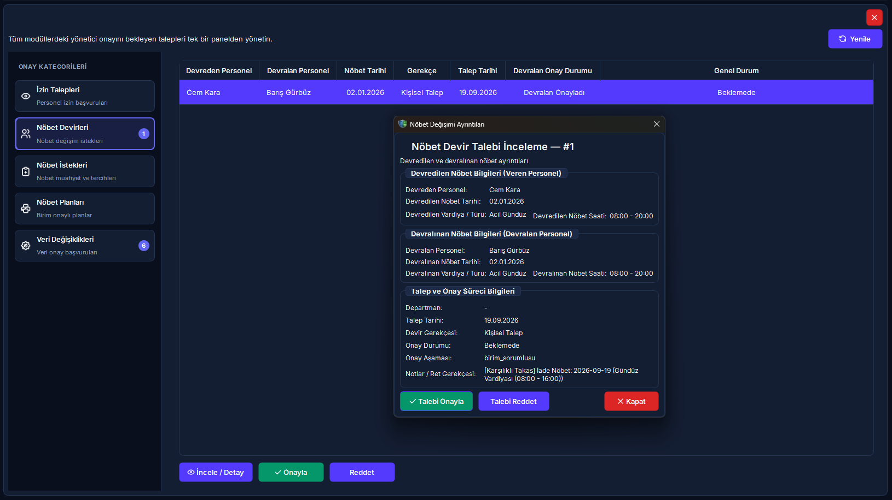

Merkezi Onay Bekleyen Görevler Paneli
Tüm klinik ve idari birimlerden gelen personel izinlerini, karşılıklı nöbet devirlerini, aylık nöbet istek ve mazeretlerini, birim onaylı nöbet planlarını, RKE muayene onaylarını, 4-göz veri değişiklik taleplerini ve imza bekleyen resmi tutanakları 7 kategorili tek merkezden denetleyip karara bağlamanızı sağlar.
Kısa Reçete: Bekleyen Talepleri İnceleme ve Karara Bağlama
İzin, nöbet devri/isteği, nöbet planı, RKE muayenesi, veri değişikliği ve imza bekleyen tutanakların yetkili yönetici veya RKS tarafından tek merkezden sonuçlandırılması.
Üstteki tıklanabilir özet kartlarından ya da soldaki 7 kategori sekmesinden bekleyen grubu açın; gerekirse [İncele ve Karar Ver] ile ayrıntıları gözden geçirip [Onayla] / [Yayınla] veya zorunlu ret gerekçesiyle [Reddet] butonuna basın.
İzin bakiyeleri anında düşer, devirlerde nöbet çizelgesi güncellenir, veri değişikliklerinde eski-yeni fark onaylanıp ek belgeler AES-256 Evrak Kasasına taşınır ve karar çalışan bildirimine yansır.
5N1K Kural ve Arayüz Çözümleme Tablosu
7 kategorili onay kuyruğu, 3 aşamalı nöbet devri, 4-göz veri fark karşılaştırması, hekim doğrulama kilidi, RKE RKS onayı ve resmi tutanak kapatma kuralları.
Kritik Sahada Yanlış Bilinen Kurallar (Mit Avcısı)
Süreç Akış Şeması
- Talep ve Kuyruk Toplama: Web Portalından ve onaya tabi masaüstü rollerinden (Personel, Sağlık, Eğitim, RGS, Olay/DÖF, Ortam Dozu, Cihaz dahil) gelen talepler 7 kategori sekmesinde toplanır.
- Kategori Bazlı İnceleme: Nöbet devrinde devralan rızası, sağlık muayenesinde hekim formu, veri değişikliklerinde eski-yeni 3 sütunlu fark penceresi, RKE ve tutanakta belge/kroki detayları kontrol edilir.
- Karar ve Bildirim: Onaylanan kayıtlar canlı tablolara işlenir ve varsa belgeler AES-256 Evrak Kasasına aktarılır; ret işlemlerinde zorunlu gerekçe alınarak sonuç portal bildirimine gönderilir.
Arayüz Ekran Görünümleri


Adım Adım İşlem Rehberi
1. Kuyruk Gezinme, Hızlı Arama ve İzin / Nöbet Onayları
- Ana menüden Onay Bekleyen Görevler ekranını açın; üstteki Toplam Bekleyen veya ilgili kategori özet kartına tıklayarak doğrudan bekleyen sekmeye geçin (sağ üst arama kutusundan personel veya ekipman adı süzebilirsiniz).
- İzin Talepleri veya Nöbet İstekleri sekmesinde satırı seçip [Onayla] ile bakiyeyi/kısıtı uygulayın ya da [Reddet] ile zorunlu gerekçe yazın.
- Nöbet Devirleri sekmesinde yalnızca devralan personel portal üzerinden onay verdikten sonra amir onayı aktifleşir; [İncele ve Karar Ver] ile eski/yeni vardiyaları doğrulayıp onaylayın.
- Nöbet Planları sekmesinde birim sorumlusunun gönderdiği aylık taslağı [Yayınla] ile tüm personele açın veya eksiklik varsa [Taslağa Geri Gönder] ile birime iade edin.
2. RKE Muayeneleri ve 4-Göz Veri Değişikliği (Fark) İncelemesi
- RKE Muayeneleri sekmesinde satırı seçip [İncele ve Muayene Detayı] ile DIN 6857-1 kusur krokisini kontrol edin; ardından [RKS Olarak Onayla] veya gerekçeli [Reddet / İade Et] butonuna basın.
- Veri Değişiklikleri sekmesinde Personel, Sağlık, Kısıt, Eğitim, RGS, Olay/DÖF, Ortam Dozu veya Cihaz modüllerinden düşen talebi seçip [İncele ve Karar Ver] butonuna tıklayın.
- Açılan karşılaştırma tablosunda eski değerleri (kırmızı) ve yeni talep edilen değerleri (yeşil) kontrol edip [Talebi Onayla] veya [Talebi Reddet] butonuna basın (sağlık muayenesi eklemelerinde sistem doğrudan hekim inceleme formunu açar; rutinde değişiklik yoksa diğer kayıtlar için [Hızlı Onayla] kullanılabilir).
3. Resmi Tutanaklar ve Web Portalı Bildirim Döngüsü
- Resmi Tutanaklar sekmesinde imza bekleyen tutanak satırını seçerek [Taslak Görüntüle] ile orijinal metni inceleyin; ıslak imzalı belge ve EBYS numarası geldiğinde [İmzalı Belge Yükle / Onayla] ile tutanağı tamamlayın (geniş liste için [Tüm Tutanaklar...] butonunu kullanabilirsiniz).
- Web Portalı Çift Yönlü Süreç: Personel ve saha görevlileri başvurularını (izin, devir rızası, mazeret, profil talebi) tarayıcıdan başlatır; yöneticinin burada verdiği onay veya zorunlu ret gerekçesi çalışanın Web Portal bildirim çekmecesine iletilir.
Sıkça Sorulan Sorular (SSS)
Personelin başlattığı nöbet takası neden onay panelinde görünmüyor?
Karşılıklı nöbet devri önce devralacak personelin kendi Web Portalı üzerinden rıza onayını gerektirir. Devralan çalışan kabul onayı verene dek talep yönetici onayına aktarılmaz.
Cihaz envanteri veya kalite kontrol değişiklikleri de buraya düşer mi?
Evet. Kullanıcının rol ayarında işlem onayı zorunlu kılınmışsa cihaz ekleme, güncelleme, HEK arşivleme, arıza, bakım ve QC kayıtları da 4-göz denetimi kapsamında Veri Değişiklikleri sekmesine düşer.
İzin onaylandığında personelin aynı günde nöbeti varsa çakışma nasıl çözülür?
İzin onaylandığında sistem çizelgedeki nöbet çakışmasını otomatik denetler; birim sorumlusu Yönetici Aksiyon Sihirbazı veya İkame havuzu üzerinden ilgili nöbete yedek personel atayabilir.
Kuyrukta çok fazla bekleyen talep varsa sistem yavaşlar mı?
Performansı korumak adına her kategori sekmesi bekleyen en güncel 500 kaydı optimize edilmiş sorgularla listeler. Süreçlerin aksamaması için amirlerin bekleyen talepleri düzenli olarak sonuçlandırması önerilir.